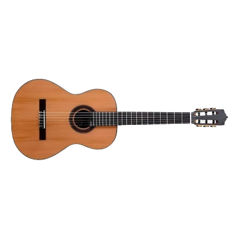

ROMÁN, LAIME Y AGUILAR
Introducción
El Martín Fierro es un poema épico gauchesco escrito por José Hernández, publicado por primera vez en 1872 bajo el título “El Gaucho Martín Fierro”. Posteriormente, en 1879, publicó la segunda parte titulada “La Vuelta de Martín Fierro”. Esta obra es considerada una de las más importantes de la literatura argentina.
El poema narra la historia de un gaucho llamado Martín Fierro que es reclutado por la fuerza para servir en la frontera. Luego de sufrir abusos, decide rebelarse contra las injusticias del sistema, convirtiéndose en un prófugo. La segunda parte muestra su arrepentimiento y su intento de enseñar valores a sus hijos.

A través de sus versos, José Hernández defendió la figura del gaucho como un hombre trabajador, libre y valiente, que fue injustamente marginado por la sociedad de la época. La obra se convirtió en una expresión cultural clave para la identidad argentina.
Simbología
El Martín Fierro está lleno de símbolos que representan la vida, la lucha y los valores del gaucho argentino:
- La guitarra: representa la voz del gaucho. A través de ella, Fierro expresa su dolor, su rebeldía y su historia. 
-
El caballo: símbolo de libertad y autonomía. Es el medio que permite al gaucho desplazarse por las pampas.

-
El desierto: representa la soledad, la marginación y el peligro constante.

-
El facón: es más que un arma; simboliza el honor, la justicia y la defensa personal del gaucho.

- La pulpería: lugar de encuentro, socialización y también de conflictos.
Personajes Principales
- Martín Fierro: Es el protagonista de la obra. Gaucho valiente, honesto, trabajador y marginado por el sistema.
- Sargento Cruz: Personaje que representa la lealtad y la valentía.
- Los Hijos de Fierro: Aparecen en la segunda parte como esperanza de redención.
- El Moreno: Gaucho sabio y defensor de la igualdad.
- El Juez: Simboliza la corrupción del sistema judicial.
Influencias
La obra Martín Fierro fue profundamente influenciada por el contexto histórico y social de la Argentina del siglo XIX.
- La situación del gaucho: maltrato y reclutamiento forzoso.
- Conflictos entre federalismo y centralismo: tensiones políticas que enfrenta la obra.
- Literatura gauchesca anterior: influencias de Hidalgo y Del Campo.
- Tradición oral y payadores: estilo rimado y musical.
Capítulos de la Primera Parte
Capítulo 1
Se presenta a Martín Fierro, un gaucho feliz y trabajador, viviendo libremente en la pampa junto a su familia y ganado.
Capítulo 2
El gobierno obliga a los gauchos a servir en la frontera. Fierro recibe la orden de presentarse y empieza a sufrir la autoridad militar.
Capítulo 3
Fierro soporta los primeros abusos y maltratos en el servicio militar. Se muestra la injusticia del sistema y el carácter fuerte del gaucho.
Capítulo 4
La vida en la frontera se vuelve más dura: hambre, fatiga y abusos constantes. Fierro reflexiona sobre la injusticia y la desigualdad.
Capítulo 5
Los abusos se intensifican. Fierro observa la dureza de la vida militar y empieza a considerar abandonar el servicio.
Capítulo 6
Martín Fierro decide fugarse del servicio militar y comienza su vida como prófugo, enfrentando peligros en la pampa.
Capítulo 7
Fierro se enfrenta a bandidos y soldados. Su valentía, astucia y habilidades de gaucho le permiten sobrevivir y escapar de los peligros.
Capítulo 8
El gaucho enfrenta conflictos con otros hombres y la naturaleza. Su carácter se fortalece mientras aprende a defender su libertad.
Capítulo 9
Fierro pasa por momentos de soledad y reflexión. Piensa en su familia, su vida y cómo educar a sus hijos en valores y libertad.
Capítulo 10
El gaucho continúa sus enfrentamientos y demuestra su habilidad con el facón. Se destaca la justicia personal y la defensa del honor.
Capítulo 11
Martín Fierro sigue como prófugo, recordando su hogar y familia. Su melancolía se mezcla con su orgullo y valentía.
Capítulo 12
El gaucho sigue mostrando resistencia y libertad. Su identidad gaucha se refuerza mientras se prepara para los desafíos futuros.
Capítulo 13
Se cierra la primera parte mostrando a Fierro como símbolo de la resistencia y dignidad del gaucho argentino.